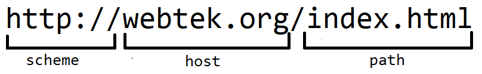

Overview of the World Wide Web
World Wide Web also known as WWW or triple W is a technology invented by Sir Tim Berners-Lee during year 1989. It is a collection of Web Resources and Applications which allow the clients to access the internet through a Web Browser. The server hosts web resources for clients to access it.
The client can access the World Wide Web by using a web browser and after opening a browser, the client will type a URL Address. Web Browsers are software applications that the client uses to retrieve resources from a specific URL. Uniform Resource Locator is a unique identifier for a specific resource.
Here is an example of URL:

The example URL above was divided into 3 different parts namely, scheme, host and path. Scheme is the one which identifies the protocol that was to access the resources in the internet. It can be http:// or https:// depending on the link. Next is the host which identifies the host that holds the resource. It can be a name that represents an address that is hosted by the server. The third one is the path which specifies the specific location of the resource. In the example, it is only the file that was included but it can also have different parent folders.
Other details:
- Telerik Fidder - A web debugging proxy.
- 127.0.0.1 -It is the local host address
- Spider -It is a bot used for search engine indexing. it visits websites and gathers information about it.